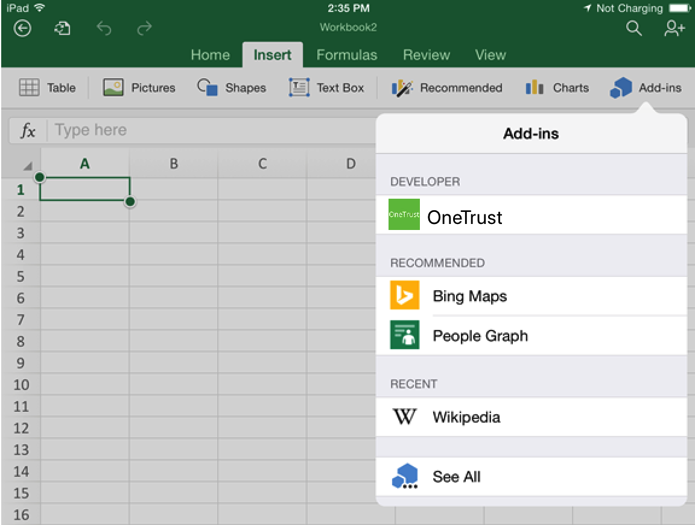

OneTrust Office Add-in for Excel on iOS (Beta)
This is the documentation page for the OneTrust Office Add-in. This Add-In allows you to import the charts from our dashboards
Sideload an add-in in Excel on iOS
-
Use a sync cable to connect your iPad to your computer. If you're connecting the iPad to your computer for the first time, you'll be prompted with Trust This Computer?. Choose Trust to continue.
-
In iTunes, choose the iPad icon below the menu bar.
-
Under Settings on the left side of iTunes, choose Apps.
-
On the right side of iTunes, scroll down to File Sharing, and then choose Excel or Word in the Add-ins column.
-
At the bottom of the Excel or Word Documents column, choose Add File, and then select the manifest .xml file of the add-in you want to sideload.
-
Open the Excel or Word app on your iPad. If the Excel or Word app is already running, choose the Home button, and then close and restart the app.
-
Open a document.
-
Choose Add-ins on the Insert tab. Your sideloaded add-in is available to insert under the Developer heading in the Add-ins UI.
